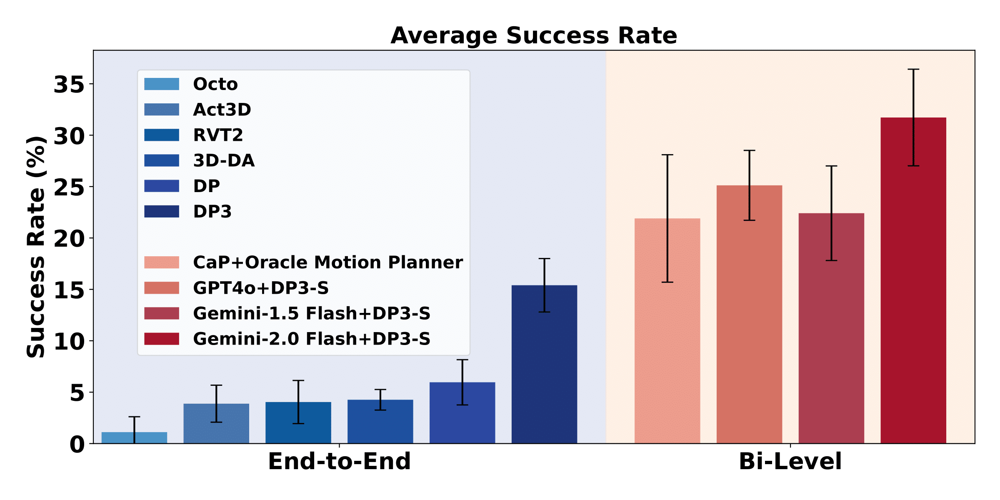

An example fine-grained robot
manipulation task in PartInstruct
Abstract
Fine-grained robot manipulation, such as lifting and rotating a
bottle to display the label on the cap, requires robust
reasoning about object parts and their relationships with
intended tasks. Despite recent advances in training
general-purpose robot manipulation policies guided by language
instructions, there is a notable lack of large-scale datasets
for fine-grained manipulation tasks with part-level instructions
and diverse 3D object instances annotated with part-level
labels. We introduce PartInstruct, the first benchmark for
training and evaluating such models. It features 513 object
instances across 14 categories, 1302 manipulation tasks in 16
classes, and over 10,000 expert demonstrations synthesized in a
3D simulator. Each demonstration includes a high-level task
instruction, a sequence of basic part-based skills, and
ground-truth 3D object data. Additionally, we designed a
comprehensive test suite to evaluate the generalizability of
learned policies across new states, objects, and tasks. We
evaluated several state-of-the-art robot manipulation approaches
including end-to-end vision-language policy learning and
bi-level planning models on our benchmark. The experimental
results reveal that current models struggle to robustly ground
part concepts and predict actions in 3D space, and face
challenges when manipulating object parts in long-horizon tasks.
Problem Setup
PartGym: 3D Simulation for Part-level Manipulation
PartGym is a realistic robot simulator for
fine-grained manipulation tasks requiring part-level understanding.
Built on Pybullet, it features a 7-DoF Franka Emika Panda robot with
a two-finger parallel gripper and simulates manipulation tasks for
14 types of everyday objects from the PartNet Mobility dataset.
PartGym provides (1) rich 3D assets, (2) part-level annotations, and
(3) a diverse task set with natural language instructions. It
includes 513 object instances and 4,653 part labels for detailed
manipulation.
Multimodal Observations in PartGym. PartGym
supports multimodal observations, including RGB images, depth maps,
scene point clouds (PCDs). It also provides object masks, 2D part
masks, 3D object PCDs, and 3D part PCDs for each object.
Object Categories
The following star plot shows the relative distribution of the
number of episodes in each object category in the dataset.
Object Parts
The following graphs show annotated parts grouped by object
categories. Spatial part names are highlighted in light gray.
PartInstruct: Benchmark for Part-level Instruction Following
Comparison of PartInstruct with Other Benchmarks.
We compared PartInstruct with existing tabletop robot manipulation
benchmarks based on: the number of distinctive part-level
instructions, part labels, part-level tasks, availability of
training demonstrations, and whether these demonstrations include
part-level annotations such as 2D and 3D segmentation masks.
Interactive Demos
Here we provide interactive demos to animate part-level manipulation tasks. You
can use the slider to see the observation of every timestep and the corresponding skill instruction.
Loading...
Evaluation Protocol
To systematically evaluate model performance, we designed a
five-level evaluation protocol, each of which evaluates a policy
in one type of generalization. Namely, generalizability over
object initial states (OS), novel object instances (OI), novel
part combinations in the same task type (TP), novel task
categories (TC), and novel object categories (OC).
Left: Training set. Right: Test 1(OS).
Left: Training set. Right: Test 2(OI).
Above: Training set. Below: Test 3(TP).Above: Training set. Below: Test 4(TC).Left: Training set. Right: Test 5(OC).
Experiments
In our benchmark, we evaluate two types of approaches to achieve
general-purpose robot manipulation: (1) end-to-end policy
learning that directly maps observation and instruction to
actions and (2) bi-level planning that first generates
high-level plans (typically subgoals), then compute and execute
the low-level action plans to achieve the subgoals.

Success Rates of all baselines. The left group represents
end-to-end learning policies, while the right group
corresponds to bi-level planning models.
End-to-End Policy Learning
We evaluate several state-of-the-art end-to-end robot
manipulation policy learning methods, including Diffusion Policy (DP),
3D Diffusion Policy (DP3), Act3D, 3D Diffuser Actor (3D-DA),
RVT2 and Octo. Note that the original DP and DP3 models do not
support language inputs. To fit the setup of PartInstruct, we
use a pre-trained T5 language encoder to get the language
embedding, then concatenated it with other features as the
observation condition for the denoising diffusion process.
Bi-level Planning
We hypothesize that it would be easier to train policies with
skill instructions compared to directly training a policy for
the whole task. Such a
low-level action policy can then be combined
with a high-level task planner that generates
skill instructions given a task instruction to solve the
manipulation task. Below is a figure illustrating our bi-level
planning framework.
High-level Task Planner. We leverage a Vision
Language Model (VLM) for high-level task planning. At step
\( t \), we prompt the VLM with the task
instruction \( I_\text{task} \) to generate the
skill instruction for the current step as the subgoal
\( sg_t \), i.e.,
\( \pi_\text{VLM}(sg_t | o_t, I_\text{task}) \),
where \( o_t \) is the observation at
\( t \).
Low-level Action Policy. The low-level action
policy is a vision-language policy that generates manipulation
actions based on a subgoal and the current observation, i.e.,
\( \pi(a_t | o_t, sg_t) \), where
\( a_t \) is the action at step
\( t \). We can train such policies using the skill
instructions annotated for training demonstrations in our
dataset. Here, we select the best-performing end-to-end policy
learning baseline, DP3, to train such policy with object part
segmentation as part of the input, which we refer to as
DP3-S.
Qualitative Results
Rollout visualizations for some baselines are shown in this section.
Model Rollouts
Touch the right of the bottle.
MODEL: DP3
Place the gripper tip on the lid of the pot.
MODEL: DP
Grab a handle of the scissors and move it to the left.
MODEL: DP
Hold the left of the mug, slide back, then release it.
MODEL: DP
Push the right side of the kitchen pot to the left.
MODEL: DP
Grab the handle of the kettle.
MODEL: Gemini-2.0 Flash+DP3-S
Take the mug on the right, slide it left, then let go.
MODEL: DP
Place gripper tip on the top of the stapler.
MODEL: DP
Comparison of End-to-End and Bi-level Episodes
Lift the box by its rotation lid, move it to the right, turn the bottom to face front, then set it down.
MODEL: DP3 (Failure - Incorrect Movement)
MODEL: Gemini-2.0 Flash+DP3-S (Success)
Conclusion
In this work, we introduced PartInstruct, a large-scale
benchmark designed to advance fine-grained robot manipulation
using part-level instructions. By curating a diverse set of
objects, tasks, and expert demonstrations, PartInstruct provides
a foundation for training and evaluating robot manipulation
models that require reasoning about object parts and their
relationships with tasks. Our evaluations of state-of-the-art
models highlight critical challenges in grounding part concepts
and executing long-horizon tasks. With comprehensive experiments
and ablation studies, our work provides key insights for future
research, highlighting the need for further innovation in
perception, reasoning, and planning to enable robots to
effectively perform fine-grained, part-aware manipulation.
BibTeX
@inproceedings{yin2025partinstruct,
title={PartInstruct: Part-level Instruction Following for Fine-grained Robot Manipulation},
author={Yin, Yifan and Han, Zhengtao and Aarya, Shivam and Xu, Shuhang and Wang, Jianxin and Peng, Jiawei and Wang, Angtian and Yuille, Alan and Shu, Tianmin},
booktitle={Proceedings of Robotics: Science and Systems (RSS)},
year={2025}
}